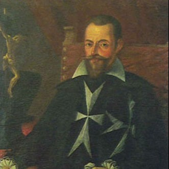
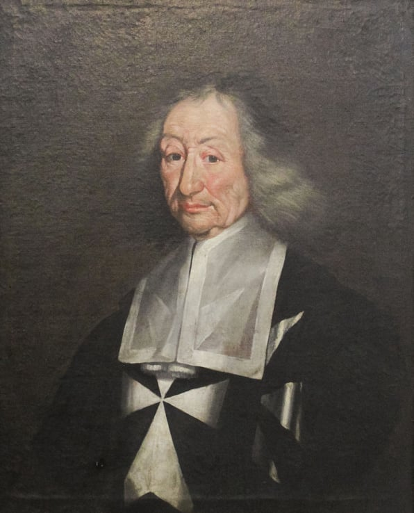
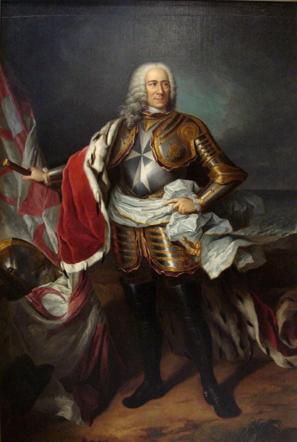

Malta
History
Historical Periods
Historical Timeline
Localities
Beaches
Dog Friendly Beaches
Local Councils
Localities
Regions
Media
Movies
Movies Shot in Malta
Music Artists
Radio Stations
TV Shows
People
Auditors General
Chief Justices
Civil Commissioners
Counts
Deputy Prime Ministers
Governors
Governors-General
Grand Masters
Leaders of the Opposition
Members of the European Parliament
Members of Parliament
Police Commissioners
Presidents
Prime Ministers
Speakers of the House of Representatives
Politics
Governments
Political Parties
Religion
Auxiliary Bishops
Basilicas
Cathedrals
Catholic Bishops of Gozo
Catholic Bishops of Malta
Catholic Organizations
Catholic Parishes in Gozo
Catholic Parishes in Malta
Chapels
Churches
Parish Churches
Pastoral Centres
Sanctuaries
Sites
Megalithic Temples
Places of Interest
Sports
Athletics Clubs
Basketball Clubs
Boċċi Clubs
Boxers
Cricket Clubs
Cycling Clubs
Football Clubs
Hockey Clubs
Motorsport Clubs
Rock Climbing Clubs
Rugby Clubs
Snooker Players
Tennis Clubs
Volleyball Clubs
Water Polo Clubs
Others
AFM Aircraft
AFM Vessels
Catholic Church Schools
Military Ranks
Police Ranks
Search
Grand Masters
Related Categories
Philippe Villiers de L'Isle-Adam
Piero de Ponte
Didier de Saint-Jaille
Juan de Homedes
Claude de la Sengle
Jean Parisot de Valette
Pierre de Monte
Jean de la Cassière
Mathurin Romegas
Hugues Loubenx de Verdalle
Martín Garzés
Alof de Wignacourt

Luís Mendes de Vasconcellos
Antoine de Paule
Giovanni Paolo Lascaris
Martin de Redin
Annet de Clermont-Gessant
Rafael Cotoner
Nicolás Cotoner
Gregorio Carafa

Adrien de Wignacourt
Ramon Perellós
Marc'Antonio Zondadari
António Manoel de Vilhena
Ramón Despuig

Manuel Pinto da Fonseca
Francisco Ximénez de Tejada
Emmanuel de Rohan-Polduc
Ferdinand von Hompesch zu Bolheim
Help
Contact Us
Other Websites
FIFA World Cup
Movies
TwidGrid
About
Discover Malta, Gozo and its other islands, its history, people and culture.
© Copyright 2024 TwidGrid - All Rights Reserved